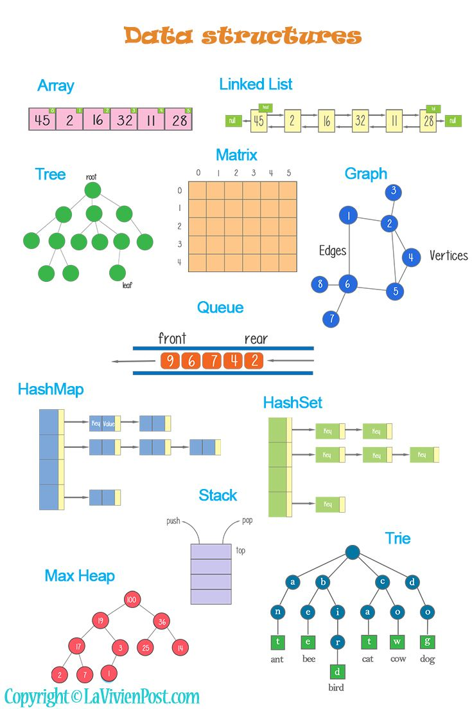
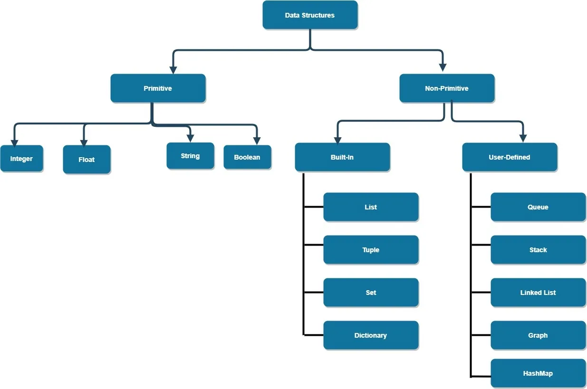

list1 = [1, 2, 3]
list1[1, 2, 3]Linear algebra is the study of linear operations on mathematical objects such as vectors, matrices, and tensors, where data generally lives.
In Python, the term vector doesn’t refer to a specific type as it might in some other languages or mathematical contexts. However, it can be represented in several ways, depending on what you need the vector to do. Here are the common ways to represent vectors in Python:
A simple list can be used as a vector. Lists are best for general-purpose programming when you need a simple, flexible, and easy-to-use container for a collection of items. It is one-dimensional and can contain elements of different data types within the same list.
They offer basic functionality like append, extend, insert, remove, and sort. Lists are very flexible but do not provide built-in support for vectorized operations.
Vectorized operations refer to performing operations on entire arrays or series of data at once, rather than using loops to operate on individual elements. This concept is key in scientific computing and data analysis because it can greatly enhance performance by leveraging optimized low-level implementations and, in many cases, parallel processing capabilities.
list1 = [1, 2, 3]
list1[1, 2, 3]list2 = [4, 5, 6]
result_1 = list1 + list2 # Instead of summing up each element, it appends the new list
result_1[1, 2, 3, 4, 5, 6]In standard Python, without NumPy or Pandas, you would typically use list comprehensions or map functions for pseudo-vectorized operations, which are less efficient but still more concise than loops.
result_2 = [x + y for x, y in zip(list1, list2)] # Simulating vectorized addition
result_2[5, 7, 9]NumPy arrays are designed to be homogeneous, meaning all elements are of the same data type. This uniformity is key for high-performance mathematical computing. If elements of different types are given, NumPy will convert them to a common type that can represent all the values without loss of precision if possible. For example, if integers and floating-point numbers are used to create an array, all elements will be converted to floats. It is called upcasting.
They support a wide array of mathematical and statistical operations. Arrays support vectorized operations, making them incredibly efficient for numerical calculations.
import numpy as np
a = np.array([1, 2, 3])
aarray([1, 2, 3])numpy library is built around vectorized operations. All arithmetic operations (+, -, *, /) and many mathematical functions (sin, log, exp) are vectorized.
b = np.array([4, 5, 6])
c = a + b # Element-wise addition
carray([5, 7, 9])A Series in pandas can also represent a vector. It is built on top of NumPy arrays and provides more functionality such as indexing with custom labels.
Like NumPy arrays, Series are generally homogeneous but can hold any data type if needed. They perform best with a single data type.
They extends NumPy’s capabilities by adding powerful data manipulation tools, such as automatic alignment of data based on index, handling of missing data, time series functionality, and more.
While generally fast, they can be slightly slower than NumPy arrays due to the overhead of index alignment and other data manipulation features.
Unlike lists and NumPy arrays, which use implicit integer-based indexing, Series use an explicit index associated with each element.
import pandas as pd
s1 = pd.Series([1, 2, 3], index=['a', 'b', 'c'])
s1a 1
b 2
c 3
dtype: int64Built on NumPy, it extends vectorized operations to operations involving indices and alignment, which are particularly useful for time-series data and other forms of sequential data.
s2 = pd.Series([4, 5, 6], index=['a', 'b', 'c'])
result = s1 + s2 # Element-wise addition with index alignment
resulta 5
b 7
c 9
dtype: int64
